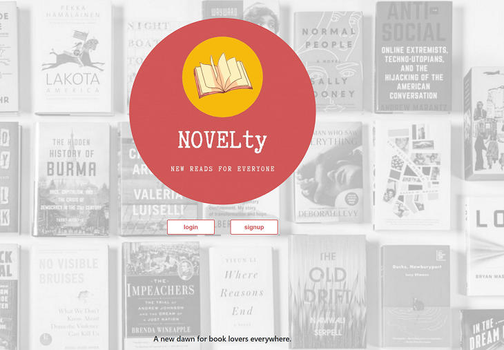
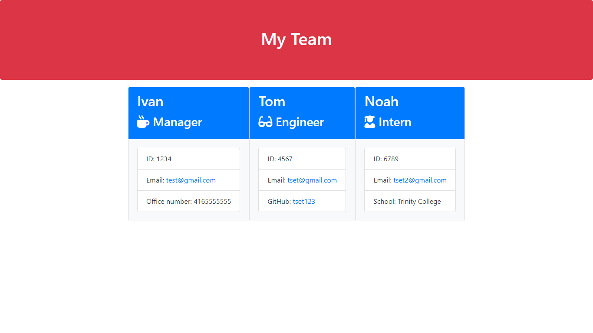

About Me
ivan.duranic@gmail.com
+1 437 774 6800
Full-Stack Web Developer and Croatian Army veteran with extensive experience in training adults. Recently earned a certificate in full stack development from the University of Toronto, with newly developed skills in JavaScript, NodeJS, and responsive web design. Known as a very organized and efficient communicator who successfully led the platoon of soldiers in the ISAF mission in Afghanistan. Passionate about educating and uplifting beginner level students at any area of education. Excited to leverage his skills as part of an optimistic, quality-driven team of instructors to bring the coding knowledge to inquiring minds.
As a student enrolled in a Web Development bootcamp I was responsible for creating applications as part of my homework regime. Varying from task to task, I was given a time frame, user story and acceptance criteria to design and implement the client side application. My JavaScript based solutions were crucial for an intuitive and easy-to-navigate user experience.
Date-Night Planner App

Consolidated a five person team that designed and developed GitHub
based application which integrated data received from multiple
server-side API requests.
Tools used: HTML, CSS, Javascript, JQuery, Materialize, Firebase,
MomentJS and MapBox.
NOVELty App

Accelerated the work of a five person team that developed the Heroku
based app which allows users to keep track of the books they read,
get personalized recommendations and connect with the like-minded
community.
Tools used: Node, Express, JavaScript, MySQL, Sequelize, Handlebars,
Bootstrap, HTML, CSS, Passport, ORM and APIs (TasteDive, Google
books, Open library, The New York Times Books API).
Employee Summary Generator

Built the CLI application that allows the user to generate a summary
of one’s team members.
Tools used: Javascript, NodeJS, Inquirer package, Jest.